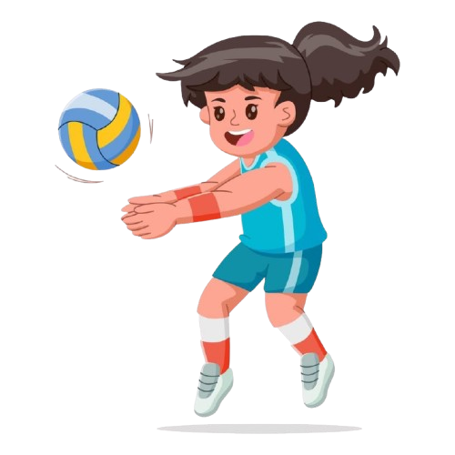
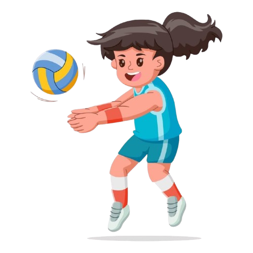

I'm Alyn Rose Fernandez Valencia, 20 years old, from Malitbog Tapaz, Capiz. I am a friendly and approachable person, known for my genuine nature and ability to connect with others. My interests in reading Wattpad fiction and watching K-dramas, especially titles like "Lovely Runner," reflect my appreciation for storytelling and the emotions it brings. I enjoy the thrill of engaging narratives and often find myself immersed in the characters' journeys, which allows me to escape into different worlds and explore diverse perspectives. Playing volleyball is another passion of mine; it not only keeps me active but also allows me to bond with my adventurous friends through teamwork and shared experiences. The sport teaches me the importance of collaboration, communication, and perseverance, skills that I value both on and off the court. Whether we’re playing for fun or competing, I cherish the camaraderie that develops through our shared love for the game. My motto, "go with the flow," illustrates my relaxed approach to life. I embrace spontaneity, adapting to new situations with ease and finding joy in unexpected moments. This flexibility helps me navigate challenges and maintain a positive outlook. Overall, I thrive in a friendly atmosphere, surrounded by people who share my interests and values, making every experience richer and more enjoyable. I believe that life is an adventure, and I’m excited to explore it with my friends by my side.
HOBBIES:
 
